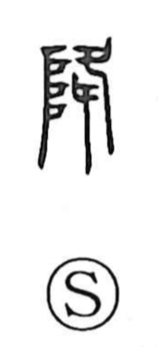

Explanation
Shirakawa reads 降 as a compound that pictures sacred descent. The left element is the mound radical 阜, which in early forms was written with a graph depicting the “ladder of the gods,” the way deities moved between heaven and earth. The right element shows a pair of feet aligned downward, making the act of coming down explicit. In ancient China, deities were imagined to descend and ascend on this heavenly ladder; Japanese myth likewise tells of the Heavenly Grandchild’s descent to Takachiho. From this origin, the character first meant the divine coming down—hence senses tied to advent and epiphany (as in kourin, “descent of a deity”). It then broadened to any movement down from a height: to let or hand down, to dismount, to fall, for rain and snow to come down, and by extension to yield or submit, as in compounds for capitulation.